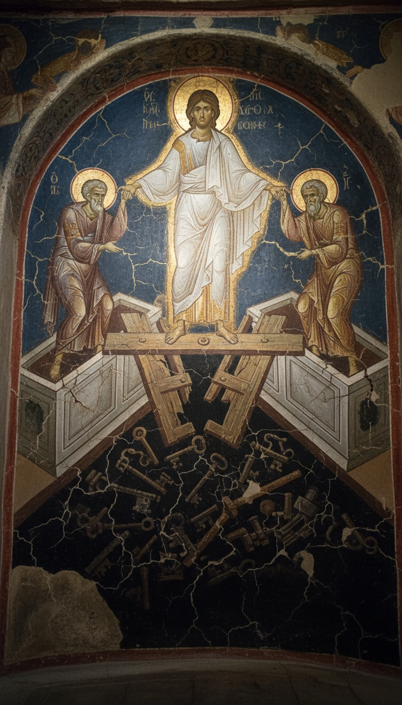

The Apostles' Creed says Jesus descended into hell, and the only ancient text that shows what he did there is the Gospel of Nicodemus, a book the Church left out of the Bible. In chapters 17 to 27 of its Latin text, Christ smashes the bronze gates of Hades, binds Satan, takes Adam by the hand and leads the dead of the Old Testament out into paradise. The Creed kept the sentence. The canon dropped the scene.
That scene went everywhere the book was shut out of. It was carved, painted, staged and sung across a thousand years of Christian Europe. It covers the most famous church wall in Istanbul. Every Sunday millions of people recite the line, and the book it comes from still sits outside the door.

One Latin Phrase, Recited Every Sunday
The line is four words long. Descendit ad inferos. He descended to the dead, to the underworld, to hell. It sits between "was crucified, died and was buried" and "on the third day he rose again" in the Apostles' Creed.
The line entered the creed late. Around 404 AD the priest Rufinus of Aquileia wrote a commentary on his own church's creed and recorded the words descendit in inferna, noting that the Roman version of his day did not carry them. By the early 700s the monk Pirminius copied out the full creed in the form Western churches still recite, descent included.
The Church kept defending it. The Catechism of the Catholic Church spends paragraphs 631 to 637 on this single line. That is seven paragraphs of doctrine resting on a scene the Bible never stages.
What the Bible Actually Gives You
Search the New Testament for the descent and you find fragments. First Peter 3:19 says Christ "went and preached unto the spirits in prison." First Peter 4:6 says the gospel was preached "to them that are dead." Ephesians 4:9 says he "descended first into the lower parts of the earth."
Matthew 27:52 to 53 adds the strangest line of all. At the crucifixion the graves opened, and the bodies of the saints rose and walked into Jerusalem. Matthew never says who they were, where they had been, or who brought them out.
Three verses, one rumor of walking corpses, and zero scene. The Creed asks you to believe an event the canon refuses to describe.
The Gospel of Nicodemus, Chapters 17 to 27
The scene lives in the second half of the Gospel of Nicodemus, also called the Acts of Pilate. Its narrators are two brothers, Karinus and Leucius, named as sons of the Simeon who held the infant Jesus in the Temple in Luke chapter 2. They have been raised from the dead. Annas, Caiaphas, Nicodemus and Joseph of Arimathea hand them ink and paper, and the brothers write their accounts in separate rooms. The two accounts match word for word.
They describe a golden light breaking into total darkness. Isaiah recognizes it as the light he prophesied. John the Baptist arrives among the dead and announces who is coming. Seth, son of Adam, tells how the archangel Michael once refused him the oil of mercy and promised it would come in 5,500 years.
Then hell turns on itself. Satan boasts that he has brought Jesus down to them. Hades, personified, panics. He reminds Satan this is the man who tore Lazarus out of his grip, and he warns that if this one enters, every prisoner goes with him.
A voice like thunder calls out the words of Psalm 24. "Lift up your gates, O ye princes, and the King of Glory shall come in." Hades asks who the King of Glory is. David answers him. The gates of bronze break, the iron bars snap, and the dead are loosed from their chains.
The image went into every church. The book that shows it stayed out.
Christ seizes Satan and hands him to Hades to hold in chains until the Second Coming. He stretches out his right hand to Adam and raises him. The patriarchs and prophets follow in a line, and Michael leads them into paradise, where Enoch and Elijah are waiting. The penitent thief from the cross is already at the gate, carrying his own cross as a pass.
| Element of the descent | What the Bible gives | What the Gospel of Nicodemus shows |
|---|---|---|
| The journey | "Descended into the lower parts of the earth" (Ephesians 4:9) | A golden light floods the darkness of Hades |
| The gates | Nothing | Psalm 24 is shouted and the bronze gates shatter |
| Satan | Nothing | Seized, chained and handed to Hades until the end of time |
| Adam | Nothing | Taken by the right hand and raised first |
| The freed dead | Unnamed saints walk into Jerusalem (Matthew 27:52) | Named patriarchs and prophets led by Michael into paradise |
| The witnesses | None | Karinus and Leucius, raised from the dead, writing in separate rooms |
The Wall at Chora
Walk into the side chapel of the Chora Church in Istanbul and the Nicodemus scene fills the apse. The fresco was painted around 1315 to 1321 under the statesman Theodore Metochites. Christ stands in blazing white on the broken doors of hell, which lie crossed beneath his feet. Locks, bolts and keys scatter into the black pit, where Satan lies bound. With each hand he hauls Adam and Eve up out of their tombs by the wrist.
Chora is one wall among hundreds. The 11th century mosaic at Hosios Loukas monastery in Greece shows the same trampled gates. The cathedral of Torcello in the Venetian lagoon shows Christ dragging Adam out above its Last Judgment. Fra Angelico painted the scene again in cell 31 of the convent of San Marco in Florence in the 1440s, with a demon flattened under the fallen door.
In the Orthodox world this image, the Anastasis, is the Easter icon itself. The Church's holiest feast is illustrated with a scene from a book the Church refused to canonize.
Staged in the Streets
Medieval England put the scene on wagons. The York Mystery Plays staged "The Harrowing of Hell" through the city streets, and the Chester and Towneley cycles performed their own versions. Before them, a 13th century Middle English poem called "The Harrowing of Hell" turned the Nicodemus dialogue into verse for ordinary listeners.
Dante put it in the Inferno around 1308. In Canto IV, Virgil tells how a mighty one came down crowned with victory and carried out Adam, Abel, Noah, Moses, Abraham and David. Medieval readers knew exactly which book Dante was retelling.
The people learned this scene from a stage, a wall and a poem. Their priests never read it to them from a Bible.
"Too Late to Count"
Scholars date the Latin descent chapters to around the 5th or 6th century and call that the reason the book stayed out. The scene itself is far older than that date. Around 170 AD, Bishop Melito of Sardis preached in Christ's own voice: "I am the one who destroyed death, who trampled Hades, who bound the strong one." The Odes of Solomon, from the 2nd century, have Christ speaking from Sheol as the dead run to him. The book's chapters may be late, but the story was being preached within a century of the apostles.
The Church still reads the scene aloud. On Holy Saturday the Catholic Office of Readings uses an ancient homily in which Christ goes down to find Adam, takes him by the hand and says, "Awake, O sleeper." That is the Nicodemus scene, word for word in spirit, read from the altar once a year. The book it comes from is still banned from the shelf. You can read it in full, with the other suppressed texts, in our lost books collection.
Look at what the Church kept. It kept the sentence in the Creed, the scene on the Easter icon, the homily on Holy Saturday and the fresco on the wall at Chora. It cut exactly one thing, the written account with named witnesses who claim they came back from the dead to describe the inside of hell.
Karinus and Leucius finished their accounts and, according to the text, vanished. If two men really walked out of Hades with a report, why does the only church that recites their story every Sunday keep their testimony out of the book?
Frequently Asked
Where in the Bible does it say Jesus descended into hell?
The Bible only hints at it. First Peter 3:19 says Christ preached to spirits in prison and Ephesians 4:9 says he descended into the lower parts of the earth, but no canonical book describes the scene.
What is the Harrowing of Hell?
It is the event where Christ breaks the gates of Hades, binds Satan and leads Adam and the righteous dead out to paradise. The full account survives in chapters 17 to 27 of the Gospel of Nicodemus.
Why is the Gospel of Nicodemus not in the Bible?
It was never admitted to the canon, even though its descent scene became the Orthodox Easter icon and gets read in spirit on Holy Saturday. The Church kept the image and left the written witness outside.
Who wrote the descent into hell account?
The text names its authors as Karinus and Leucius, sons of the Simeon from Luke chapter 2. They are said to have been raised from the dead and written their accounts in separate rooms, and the two versions match.
Where can I see the descent into hell in art?
The Anastasis fresco in the Chora Church in Istanbul, painted around 1315 to 1321, is the most famous version. The scene also appears at Hosios Loukas in Greece, Torcello near Venice, and in Fra Angelico's cell 31 at San Marco in Florence.
Before you go
7 books the Vatican doesn't want you reading. Free PDF. The texts they cut, with sources. Joined by 300+ Inner Circle members.
No spam. Unsubscribe anytime.
Go deeper
The Hidden Canon, Vol. I: Enoch. Jubilees. Thomas. Mary. Judas. 90 pages, 14 chapters, every receipt cited. The books your Bible quietly removed.
Read the Canon →